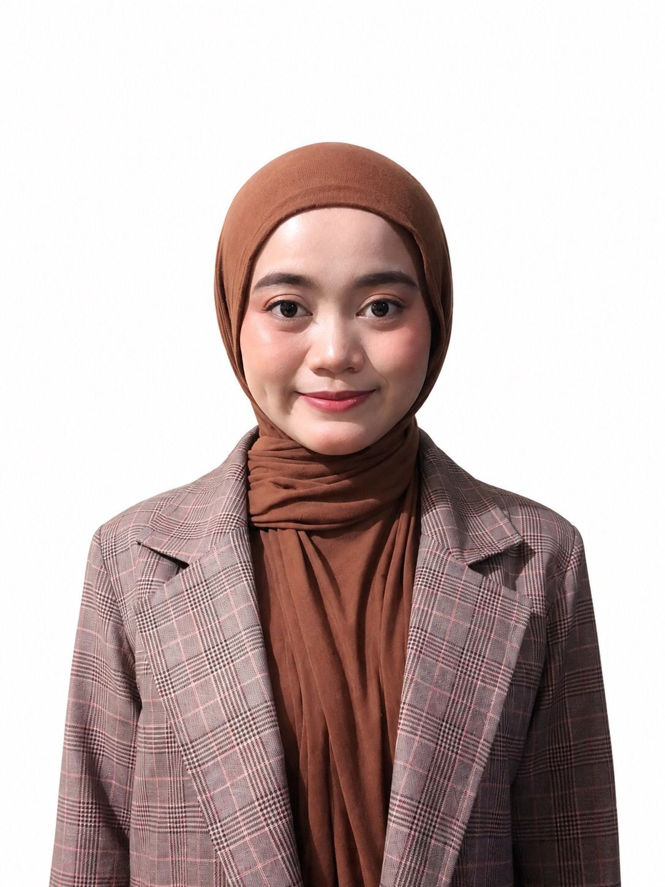

Profesional di bidang pelayanan pelanggan dan administrasi dengan pengalaman di industri B2B. Berkomitmen memberikan layanan terbaik dan solusi inovatif untuk pelanggan.

Lulusan SMK PUTRA BANGSA DEPOK tahun 2022, jurusan Akuntansi Keuangan dengan pengalaman 1,9 tahun di perusahaan percetakan offset B2B. Saat ini saya bekerja sebagai Corporate Solutions Executive.
Saya mahir berkomunikasi secara efektif, membina hubungan dengan berbagai kelompok, memberikan layanan yang ramah dan interaktif, serta responsif. Saya memiliki kemampuan mendengarkan yang sangat baik, mampu melakukan tugas-tugas administratif, dan senang mencari ide-ide kreatif serta inovatif untuk memberikan masukan kepada pelanggan.
Saya juga mampu bekerja secara efisien di lingkungan yang dinamis dan sibuk, selalu berusaha memberikan kualitas kerja terbaik.
Akuntansi Keuangan
2019 – 2022 | Depok, IndonesiaBadan Nasional Sertifikasi Profesi (BNSP) - KKNI Level II
2022 - 2025PT. Rembo Jaya Sukses
2023 - 2024